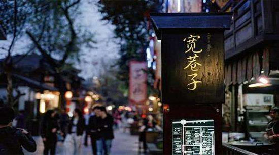

宽窄巷子
国家AA级旅游景区
宽窄巷子位于四川省成都市青羊区长顺街附近，由宽巷子、窄巷子、井巷子平行排列组成.

康熙五十七年（1718年），在平定了准葛尔之乱后，选留千余兵丁驻守成都，在当年少城基础上修筑了满城。民国初年，当时的城市管理者下文，将“胡同”改为“巷子” 。二十世纪80年代，宽窄巷子列入《成都历史文化名城保护规划》。2003年，宽窄巷子街区正式出现在世人的词典中。
宽窄巷子整体空间风貌较为完整，延续了清代川西民居风格，街道在形制上属于北方胡同街巷，其主要特色为；“鱼脊骨”形的道路格局。这种格局形式便于街道居民自发式能管理，奠定了安静、悠闲的生活基调。
宽窄巷子的街道空间尺度由两旁的建筑和院墙所界定，街巷宽度内宽巷子7米左右，窄巷子5米左右，而沿街建筑为1～2层，高度也在5～8米，这样形成的街道断面高宽比约为1：1。